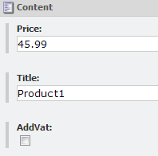
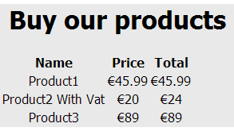

In the previous tutorial we saw how you can infer the type created using the inferred type support in Glass.Mapper. However using Glass.Mapper's inferred type support is limited to the template ID and you may want more control than that.
For this tutorial we will have a set of products, some of which will require VAT to be added, within Sitecore the item has the following setup:
We want to determine the type Glass.Mapper loads based on the AddVat field and will be one of the following classes below, the second class adds vat to the product price:
[SitecoreType(AutoMap = true)]
public class Product
{
public virtual string Title { get; set; }
public virtual double Price { get; set; }
[SitecoreIgnore]
public virtual double Total { get { return Price; } }
}
[SitecoreType(AutoMap = true)]
public class ProductWithVat : Product
{
private const double VatRate = 1.2;
public override double Total
{
get { return Price * VatRate; }
}
}
Now we have our models we need to create a configuration task that will control the type returned:
public class ProductInferrer : Glass.Mapper.Pipelines.ConfigurationResolver.IConfigurationResolverTask
{
readonly ID _productTemplateId = new ID("{34AF2616-133A-4C83-B1BA-4A28AF78E5FF}");
public void Execute(ConfigurationResolverArgs args)
{
//check that no other config task has set a tyoe
if (args.Result == null)
{
var scContext = args.AbstractTypeCreationContext as Glass.Mapper.Sc.SitecoreTypeCreationContext;
if (
scContext != null
&& scContext.Item != null
&& scContext.RequestedType == typeof(Product))
{
//get the item being loaded
var item = scContext.Item;
//check that a product item is being loaded
if (item.TemplateID == _productTemplateId)
{
//determine which product type to load
if (item["AddVat"] == "1")
{
args.Result = args.Context[typeof (ProductWithVat)];
}
else
{
args.Result = args.Context[typeof (Product)];
}
}
}
}
}
}
The configuration task inherits from the Glass.Mapper.Pipelines.ConfigurationResolver.IConfigurationResolverTask which implements a single method Execute.
The Execute method accepts a single parameter of type ConfigurationResolverArgs, this contains all the information available to Glass.Mapper about the current item being loaded and the current Glass.Mapper context being used.
The task has to first check that no result has already been set by another task:
if (args.Result == null)
The next line access the AbstractTypeCreationContext property, this property contains information specific to the CMS's being used. In this is example we cast it to the Sitecore version, this allows us to then access the Sitecore item being loaded.
var scContext = args.AbstractTypeCreationContext as Glass.Mapper.Sc.SitecoreTypeCreationContext;
The next few lines are relatively straight forward, the final interesting part is where we grab the configuration for the type we want to load from the Glass.Mapper context:
args.Result = args.Context[typeof (Product)];
Now that we have our new task we need to register it with the Castle Windsor DI container, if you are using a different DI container you will need to configure it. To register the new class open the /App_start/GlassMapperScCustom class (this class is created automatically when you install Glass.Mapper) and update the CastleConfig method:
public static void CastleConfig(IWindsorContainer container){
var config = new Config();
container.Register(
Component.For<IConfigurationResolverTask>().ImplementedBy<ProductInferrer>()
);
container.Install(new SitecoreInstaller(config));
}
Now we have everything setup we need to prove this works with the following rendering, this uses the Razor syntax:
<h1>Buy our products</h1>
<table>
<tr>
<th>Name</th>
<th>Price</th>
<th>Total</th>
</tr>
@foreach (var child in Model.Children)
{
<tr>
<td>
@child.Title
</td>
<td>
€@child.Price
</td>
<td>
€@child.Total
</td>
</tr>
}
</table>
When the page loads we can see the output below, notice that the total price for the second item is higher than the price because VAT has been added using the ProductWithVat class:
The great thing about implementing a Configuration Task is that it will work whenever a Product item gets requested from Sitecore.